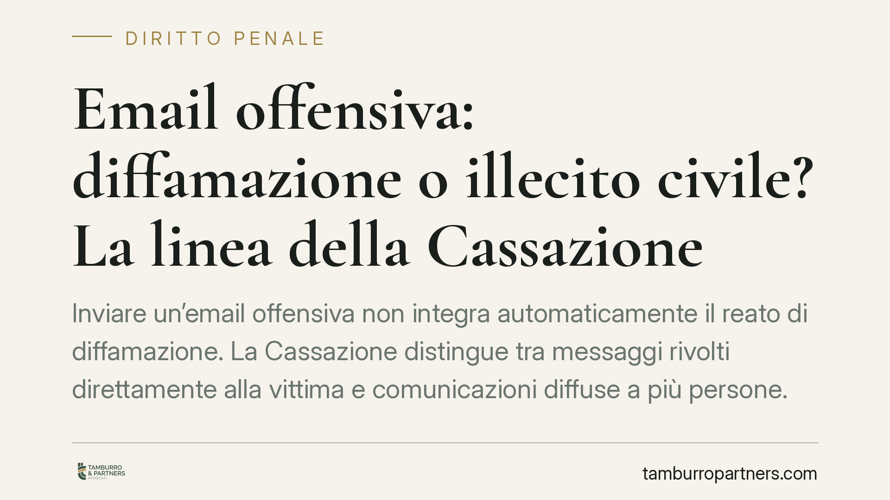

Email offensiva: diffamazione o illecito civile? La linea della Cassazione
Inviare un'email offensiva non integra automaticamente il reato di diffamazione. La Cassazione distingue tra messaggi rivolti direttamente alla vittima e comunicazioni diffuse a più persone. Una differenza tecnica con conseguenze concrete: cambia il tipo di responsabilità e le tutele attivabili. Vediamo i confini e le implicazioni pratiche per chi scrive e per chi riceve.

Il caso e la distinzione di fondo
Un'espressione offensiva contenuta in un'email non ha sempre la stessa qualificazione giuridica. Tutto dipende da un elemento: a chi arriva il messaggio.
Se l'offesa raggiunge solo la persona presa di mira, non si configura la diffamazione. Manca infatti il requisito essenziale di quel reato, cioè la comunicazione con più persone. Se invece il contenuto offensivo viene inviato o inoltrato ad altri soggetti oltre alla vittima, il quadro cambia radicalmente.
La Corte di Cassazione ha ricondotto la questione a una lettura rigorosa delle norme, evitando l'automatismo per cui "offesa via email uguale diffamazione".
Inquadramento normativo
Il codice penale distingueva due fattispecie. L'art. 594 cod. pen. puniva l'ingiuria, cioè l'offesa all'onore o al decoro rivolta direttamente alla persona presente. L'art. 595 cod. pen. disciplina invece la diffamazione, che richiede l'offesa alla reputazione altrui comunicando con più persone, in assenza dell'offeso.
È un dato tecnico decisivo. La differenza non sta nella gravità dell'insulto, ma nella struttura della comunicazione: uno a uno oppure verso una pluralità di destinatari.
Va segnalato un passaggio normativo rilevante. Con il d.lgs. n. 7/2016 l'ingiuria è stata depenalizzata: non è più reato, ma illecito civile. Chi offende direttamente un'altra persona non commette un delitto, ma può essere condannato al pagamento di una sanzione pecuniaria civile e al risarcimento del danno. La diffamazione, invece, resta reato a tutti gli effetti.
Cosa cambia in concreto
La qualificazione produce effetti pratici molto diversi.
Email a un solo destinatario (la vittima). Non c'è diffamazione. Si rientra nell'area dell'illecito civile da ingiuria. La persona offesa non può sporgere querela penale per diffamazione, ma può agire in sede civile per ottenere il risarcimento e l'applicazione della sanzione pecuniaria prevista dalla legge.
Email a più destinatari o inoltrata a terzi. Qui l'offesa alla reputazione viene percepita da una pluralità di soggetti. Si apre lo scenario della diffamazione, con possibile responsabilità penale del mittente. Anche una singola email in copia conoscenza (Cc) a colleghi, superiori o terzi può integrare il requisito della comunicazione con più persone.
Lo stesso vale per i messaggi inoltrati in chat di gruppo, mailing list o thread aziendali: il numero e l'identità dei destinatari diventano l'elemento da valutare con attenzione.
Perché il dettaglio conta per aziende e privati
Nel contesto lavorativo il rischio è concreto. Un'email di lamentela o di attacco personale, se indirizzata anche solo al diretto interessato, resta sul piano civile. La stessa email spedita con altri in copia sposta la valutazione su un terreno penale.
È un margine sottile che spesso viene ignorato nel momento in cui si scrive di getto, magari sotto pressione o in un conflitto professionale. La prova, peraltro, è agevole: l'email conserva data, mittente, destinatari e testo. Il documento parla da sé.
Cosa fare in concreto
- Prima di inviare, controllate i destinatari. Verificate campo A, Cc e Ccn: la pluralità di riceventi è ciò che può trasformare un contrasto privato in un reato.
- Conservate le prove. Se ricevete un'email offensiva, salvate il messaggio integrale con intestazioni tecniche complete, senza modificarlo. Serviranno per qualsini azione, civile o penale.
- Valutate la reale portata dell'offesa. Distinguete tra critica aspra ma lecita e attacco all'onore o alla reputazione: non ogni frase sgradevole ha rilievo giuridico.
- Non reagite di impulso. Rispondere con altre offese espone a responsabilità speculari e complica la posizione processuale.
- Rivolgetevi a un legale prima di agire. La scelta tra sede civile e penale, e i termini per attivarsi, dipendono da una valutazione preliminare del caso concreto.
La regola operativa è semplice: la responsabilità non nasce solo da cosa si scrive, ma da chi legge. Ragionare sui destinatari, prima ancora che sul contenuto, è la forma più efficace di prevenzione.
Disclaimer
Contributo informativo a cura di Tamburro & Partners - Avv. Giuseppe Tamburro. Non costituisce parere legale.
Ogni condominio ha una storia a sé.
Se gestisci un'amministrazione e vuoi un confronto su una specifica questione condominiale, scrivi allo studio. Ti rispondiamo entro un giorno lavorativo.